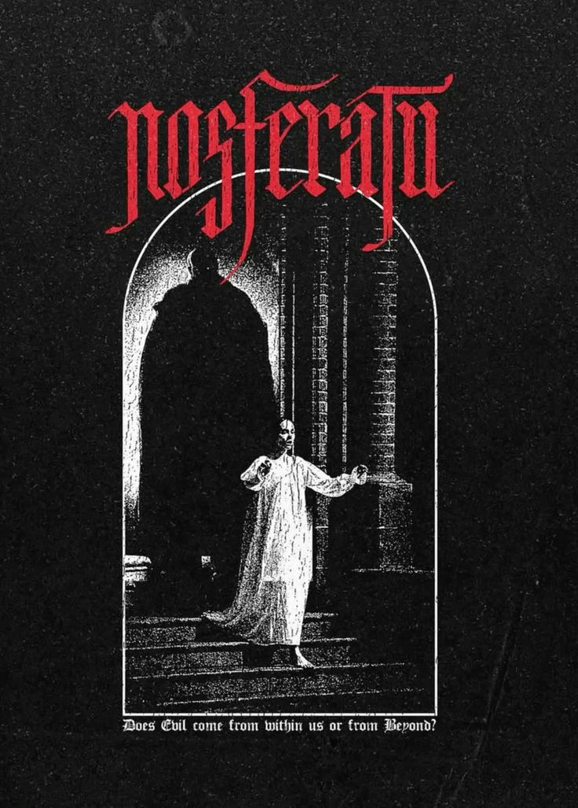
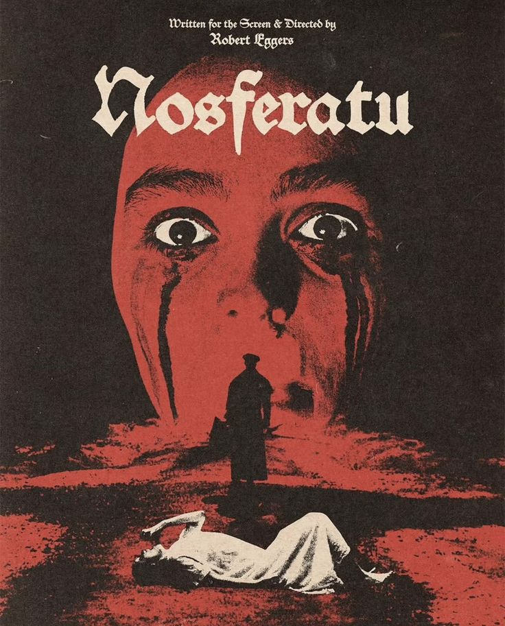

Nosferatu: A Symphony of Horror
Nosferatu is a 2024 American Gothic horror film written and directed by Robert Eggers. It is a remake of the film Nosferatu: A Symphony of Horror (1922), which was in turn inspired by Bram Stoker's novel Dracula (1897). It stars Bill Skarsgård, Nicholas Hoult, Lily-Rose Depp, Aaron Taylor-Johnson, Emma Corrin, and Willem Dafoe.

Plot
In the early 1800s, a young girl named Ellen prays for a companion to ease her loneliness. This inadvertently summons the Nosferatu , Count Orlok, forging a psychic link between them, which triggers her seizures.
In 1838, Ellen has married Thomas Hutter, and the couple live in the German town of Wisburg. Thomas accepts a lucrative commission from his employer, Herr Knock, to sell the decrepit Grünewald Manor to the reclusive Count Orlok. Ellen relates her nightmares to him, seeing them as a bad omen, and pleads for Thomas to stay, but he gently dismisses her concerns. He leaves her in the care of his wealthy friend Friedrich Harding and his pregnant wife Anna, along with their two young daughters, Clara and Louise.
Breakdown (with spoilers)
The movie itself is ofcourse a reamke of the 1922 silent film titked "Noseferatu: symphohy of horror". That was the first vampire movie ever.